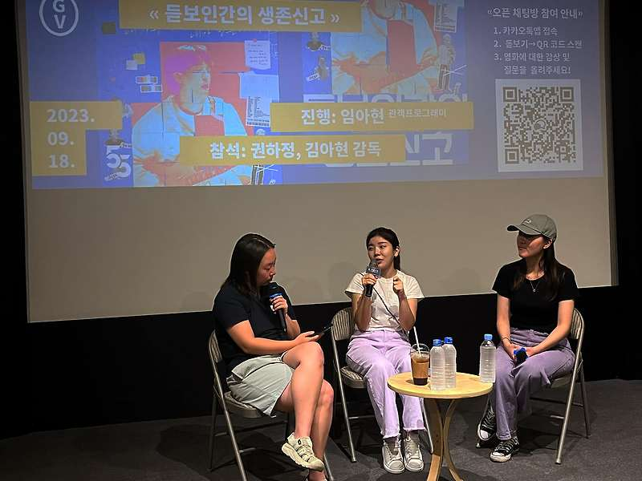

매거진 삼삼오오 · GV 모먼트
<듣보인간의 생존신고> 권하정, 김아현 감독 / 2023.09.18.


<듣보인간의 생존신고> 관객과의 대화 기록 2023.09.18.
참석 권하정, 김아현 감독
진행 임아현 관객프로그래머
기록 임아현 관객프로그래머
임아현 : 안녕하세요. 오랜만에 이렇게 큰 박수와 함께 시작을 한 것 같습니다. 저는 오늘 GV 진행을 맡은 오오극장 관객프로그래머 임아현이라고 합니다. 반갑습니다. 영화에서도 보셨다시피 이 감독님들의 에너지가 대단한데요. 감독님들 소개 부탁드립니다.
권하정 : 안녕하세요. <듣보인간의 생존신고>에서 듣보인간 1 역할을 맡은 권하정입니다.
반갑습니다.
김아현 : 안녕하세요. 듣보인간 2 김아현입니다.
임아현 : 이 다큐멘터리의 처음 시작부터 이야기를 좀 들어보고 싶은데요, 어떻게 이 영화를 기획하고 준비하시게 되었나요?
권하정 : 처음부터 다큐멘터리를 만들겠다는 생각은 못했어요. 뮤직비디오를 만들기 위해서는 서울로 상경해야 되는 상황이었거든요. 게다가 제가 계속 방구석에 있다가 부모님한테 이름도 모르는 가수 뮤직비디오 찍어주러 간다고 하면 좀 납득이 안 되실 것 같은 거예요. 그래서 ‘저는 영화과를 나왔으니까 이 과정을 다큐멘터리를 만들 거예요.’ 이렇게 말했죠. 어떻게 보면 빌미였어요. 막상 뮤직비디오를 찍으려고 하니까 저희가 돈이 없잖아요? 근데 마침 그때 15분짜리 짧은 숏폼을 만들면 990만 원의 정부 지원금을 받을 수 있다는 거예요. 그래서 저기에 한 번 지원을 해보자 한 거죠. 조그마하게 지금이랑 거의 비슷하게 무명 가수를 찾아가서 이름을 되찾는 그런 내용으로 지원을 했습니다. 어떻게 보면 뮤직비디오의 제작비를 마련하기 위해서 시작했다가 저희의 빌미가 더해져서 그게 이제 확장판으로 나온 결과물이 되었습니다.
김아현 : 사실 각 잡고는 안 찍었고요. 저희가 뮤직비디오 촬영에 급급해서 그냥 진짜 방치만 해둔 거였어요. 진짜 꼭 이거는 찍어야 돼 하는 순간에 카메라를 들긴 했지만 대부분은 ‘이 시간이 너무 소중하다, 또 언제 이런 시간을 우리가 가질 수 있겠냐’ 하는 그런 마음으로 찍었던 것이었어요. 진짜 너무 운이 좋게도 장편화가 되고 개봉까지 많은 도움을 주셔가지고 많은 분들께 보여드릴 수 있게 되었습니다.
임아현 : 저는 이 영화를 보고 이승윤씨를 좋아하게 되었어요. 영화가 끝나고 뮤직비디오를 다시 찾아보고 그랬거든요. 감독님들께서 이승윤씨를 좋아하게 된 이유가 있을까요?
권하정 : 저는 가사에 빠진 거에요. 2018년 제가 너무 힘들었을 때 많은 위로를 받았어요. 힘든 시기에 힘내라는 말도 위로가 되지만 그냥 같은 처지의 사람을 보면서 그래 우리 다 힘들구나 하는 그런 위로도 있잖아요. 이승윤씨의 가사가 그랬어요. 제가 하루 종일 하는 행동을 가사에 적어놨더라고요. 영화를 하지 않을 때이긴 하지만 창작자의 마인드로 들여다보게 되었어요. 나도 똑같은 삶을 살고 있는데 이 사람은 어떻게 자신의 이런 상황을 노래로 표현할 수 있을까 부러운 거예요. 그러면서 이 사람은 어떤 사람일까 좀 궁금해지기 시작했죠.
김아현 : 저는 처음부터 끝까지 입덕을 한 적이 없어가지고.(웃음) 언론 시사회에서도 공식적으로 이야기 했어요. 입덕은 안 했고 사람으로서 좋아합니다. 그 사람으로서 좋아하는 포인트가 뭘까 생각하면 똑같이 가사인 것 같아요. 가사를 쓰는 일은 마음에서 우러나지 않으면 안 되는 거잖아요. 이승윤씨의 인생을 다는 모르지만 따뜻한 사람이라고 느껴지는 부분들이 많이 와 닿았어요.

Q : 첫 미팅 당시 이승윤씨가 올해가 마지막 활동이 될 수도 있다고 하셨을 때 심경의 변화는 없으셨는지 궁금합니다. 아무리 가사가 좋아서 시작했다고 해도 그가 가수를 그만두면 감독님들의 피땀이 들어간 결과물도 주목을 받을 기회가 없어지는 거잖아요.
권하정 : 마지막이라고 들었을 때 진짜 잘해야겠다는 생각이 조금 더 들었어요. 진짜 제가 이 활동과 작품을 이승윤씨의 마지막으로 만들어버리면 안 되잖아요. 근데 아현이가 계속 이걸로 뜬다, 우리가 만들면 뜬다고 이 사람을 우리가 띄울 수 있다고 얘기해줘서 함께할 수 있었어요.
임아현 : 그래서 마지막이라고 생각했을 때 주어지는 책임감이라든지 그런 마음들이 좀 있으셨던 것 같아요. 가수에 대한 호기심으로 시작했지만 이제 뮤직비디오라는 결과물을 완성해야 하는 상황이잖아요. 본격적으로 뮤직비디오를 작업하는 과정에서 마음의 변화라든지 집중력의 변화라든지 그런 부분은 좀 있었을까요?
권하정 : 저는 제안하고 수락했을 때부터 이걸 잘 만들어야겠다는 마인드가 있었던 것 같아요. 영화에도 나오지만 제가 ‘내가 승윤 씨를 좋아해서 시작한 일인데 내가 이렇게 지치는 게 맞나’ 라고 이야기하는 포인트가 있거든요. 저희가 먼저 좋아해서 제안한 일이다 보니까 부담감이 너무 큰 거예요. 원래 제가 작업할 때 스트레스를 되게 많이 받는 스타일인데 근데 그런 거 있잖아요. 기쁘게 해야 될 것만 같은 느낌. 진짜 스트레스를 받는데 뭔가 내가 지치면 안 돼, 아니야 나 쓰러지면 안 돼 이런 느낌. 좋아서 하는 일도 지칠 수 있는데 그때는 내가 이렇게 지쳐하는 것 자체가 좋아하는 마음을 퇴색 시키는 것 같은 느낌이 들었어요. 잘 만들어보고 싶었던 과정에서 겪었던 자연스러운 감정인데 당시에는 내가 좋아하기 때문에 지치면 안 된다는 강박이 좀 있었던 것 같아요.
김아현 : 언니의 이런 마음은 먼저 제안한 사람으로서의 책임감이 크게 작용했다고 생각해요. 저에게 ‘나랑 같이 만들래’ 라고 제안했던, 그 마음을 알고 있었기 때문에 저 또한 우리 지치지 말고 무조건 완성시키자는 마음이었어요. 그리고 학교를 졸업하고 뭔가 창작을 해보자고 마음먹은 것이 처음이었기 때문에 우리가 하고 싶은 일을 좋아하는 마음을 지키면서 완성해보자는 다짐으로 끝까지 작업할 수 있었던 것 같아요. 이걸 가능하게 만든 원동력은 아무래도 같이하는 친구들이겠죠. 친구들과 함께가 아니었다면 저도 진작 힘들어서 어떻게 할까 싶었을 거예요. 이렇게 애쓰는 언니의 마음도 알고, 동굴에서 나와서 우리랑 함께하려고 하는 은하의 마음도 잘 알기 때문에 그 마음들을 모아 우리가 한 번 해보자 했던 것이 쭉 이어졌던 것 같아요.

Q : 뭔가 급하게 만들었다고 볼 수 있는 ‘무명성 지구인’ 뮤직비디오가 너무너무 좋았어요. 급하게 만드신 그 뮤직비디오는 어느 정도 시간이 걸리신 건가요?
권하정 : 당시 이승윤씨 활동에 대한 정보가 너무 안 나오는 거예요. 작품을 완성하면 전달해야 되는데 어떻게 만날 수 있을까 고민하고 있었죠. 딱 그 타이밍에 갑자기 일주일 후에 이승윤씨가 활동하는 밴드인 ‘알라리깡숑’이 무대를 한다는 정보가 떴어요. 그럼 지금 당장 찍어야 되는 거예요. 그 때가 아니면 언제 만날 수 있을지 기약이 없으니까 유일한 마지막 기회라는 생각으로 거의 하루? 하루 반 만에 촬영을 하고 편집해서 만나러 가기 직전까지 차 안에서 계속 편집하면서 그렇게 드렸던 거였어요.
임아현 : 두 분이 같이 작업을 하시면서 각자 보여주고 싶은 부분이 다를 수도 있었을 것 같아요. 영화를 만들면서 이런 지점을 담아내고 싶다는 주요 포인트가 있을까요?
권하정 : 처음에 저는 다큐멘터리는 짜여진 틀에 기승전결이 있어야 한다는 생각이 강했어요. 그래서 아현이랑 편집할 때도 굉장히 많이 부딪혔었죠. 한 컴퓨터로 돌아가면서 했거든요. 제가 편집하고 나서 아현이가 작업하면 너무 웃기게 만들어 놓는 거예요. 그럼 제가 다시 ‘그것이 알고 싶다’ 느낌으로 바꿔놓고. 둘이 톤이 달랐죠. 결과적으로는 진짜 우리의 모습, 진짜 일했던 과정을 진정성 있게 보여주니까 관객들이 좀 더 좋아하셨던 것 같아요.
김아현 : 언니가 이건 우리만 아는 얘기지 관객들은 이해 못할 것 같아 라는 생각을 많이 했다면 저는 세 명의 캐릭터를 얼마나 잘 보여줄 수 있을까를 생각했던 것 같아요. 이 친구의 이 모습이 너무 사랑스럽고 재미있는데 이 장면을 넣으면 관객들도 알아봐주시지 않을까 그런 기대가 있었죠. 저희끼리 있을 때만 나오는 어떤 에너지가 있잖아요. 그런 자연스러운 모습을 담으면 진정성 있게 보일 거라고 좀 밀고 나가려고 했던 것 같아요.
임아현 : 이승윤을 듣보인간이라고 말하는 거냐 이런 얘기도 되게 많이 들으셨을 것 같은데, 제목이 어떻게 변해왔는지 어떻게 종착지가 이 제목이 되었는지에 대한 이야기를 좀 풀어주세요.
권하정 : 처음 제목을 얘기해 주면 분위기가 다들 싸해지시더라고요. ‘7월의 책갈피’였어요. 뮤직비디오를 완성하고 전달한 게 7월이라 그렇게 지었죠. 아무리 봐도 영화의 결이랑 안 맞고 아무도 안 볼 것 같은 느낌이죠.
저는 원래 굉장히 자조적인 사람이에요. 누가 이걸 궁금해 하고 이걸 보겠어. 이런 마음이 좀 컸어요. 그래서 우리를 듣보인간이라고 칭하자고 정했죠. 만약에 영화를 보러 오셨는데 얘네 누구야 이렇게 생각할 수도 있잖아요? 그렇다면 ‘듣보인간’이 좋겠다고 생각한 거죠. ‘생존 신고’라는 단어는 오랜만에 만난 학교 선배가 제가 영화를 안 한 지 꽤 되다 보니까 ‘야 너 영화 안 한다더니 살아있었네’ 이렇게 얘기하는 거예요. 그냥 인사말이잖아요. 근데 자격지심이 가득할 때라 ‘뭐야? 뭐 영화 안 하면 나 죽어 있는 거야?’ 라고 말했어요.
그 이후로 처음 만든 영화거든요. 그래서 생존신고 같은 영화라는 의미로 <듣보인간의 생존신고>라는 제목을 제안했고, 아현이도 좋은 것 같다고 찬성해서 최종 제목이 되었습니다.
임아현 : 촬영 준비 중에 안 된다는 말도 많이 들으셨고, 결국은 감독님들만의 방법으로 풀어가기로 하셨다고 했는데 그 때는 어떤 마음가짐이셨을까요? 그냥 우리끼리 으쌰으쌰 잘해보자. 이런 것만으로는 안 되는 순간들이 분명히 있으셨을 것 같거든요. 어떻게 생각하세요?
김아현 : 다른 일들과 똑같다고 생각해요. 다른 일을 해도 다들 어려움 많으시잖아요. 어떻게 일이 술술 잘 풀리겠어요. 촬영하면서 힘들었던 부분들도 그냥 안 되는 날이 있구나 정도로 생각해요. 살면서 다들 겪는 거라고요. 그럴 때마다 저희들은 먹는 걸로 풀고, 언니는 영화에 나온 것처럼 이승윤씨 노래를 들으면서 그렇게 좀 위안을 얻은 것 같아요.
권하정 : 저는 극복이라기보다는 극복하지 않으면 안 되는 상황이었기 때문이었어요. 다들 어떻게 그렇게 용감하냐고 하는데 용감할 수밖에 없었다고 해야 되나요? 그러니까 일을 용감해서 처리했던 게 아니고 코앞에 촬영이 있어서 움직일 수밖에 없는 상황이었습니다.

Q : 영화를 보면서 감정 이입이 되는 순간이 많았어요. 우여곡절 끝에 결국 영화 개봉까지 왔는데요. 감독님들이 힘든 순간 제일 힘이 된 말은 어떤 말이었나요?
김아현 : 하나만 꼽기는 좀 어려운데요. 개봉 이후 지금까지를 떠올려보면 관객분들의 마음이 그대로 느껴져요. 영화가 끝나고 저희에게 사인을 받거나 사진을 요청하실 때도 한마디씩 꼭 해주세요. 그게 너무 감사한 거예요. 좀 전에도 먼저 가시는 분께서 ‘수고하셨어요.’ 라고 얘기해주셨어요. 저는 그걸로 충분하고 너무 감사해요. 힘이 되는 말이 어떤 말이냐고 물어보시면 그냥 그게 전부인 것 같아요.
뮤직비디오와 영화 작업을 하면서 과정이 순탄하지만은 않았어요. 그런데 그런 말들 덕분에 마음이 정리가 되더라구요. 흔히 어른이 되어야 하고, 살다보면 마음이 무뎌진다고 하잖아요. 저는 그 말에 굴복하기 싫은 거예요. 마음이 무뎌지는 게 아니라 내가 가지고 있는 마음을 지키고 키워나가야겠다고 다짐하게 되었습니다. 영화를 보는 관객분들도 그랬으면 좋겠습니다.
임아현 : 개봉을 하게 되면 주변 사람들이 차기 계획 이런 것들을 자주 물어보실 것 같아요. 이후 계획이나 해보고 싶다는 생각이 드는 아이디어들이 좀 있으실까요?
권하정 : 아직은 이걸 꼭 하고 싶다는 건 없고요, 영상이든 영화든 잘 만들어보고 싶다는 생각이 들어서 여기저기 많이 찔러보고 있습니다. 열심히 노력은 하고 있는데 이번 공모전에 제가 떨어졌거든요. 언젠가 또 생존 신고하는 날이 오겠죠.
김아현 : 저도 다음 작품을 무조건 영화로 하겠다는 마음은 없고요. 제가 이런 생각들이나 감정이 좀 뒤늦게 정리되는 편이라 11월 정도면 조금은 정리가 되지 않을까 싶어요. 정리가 되면 글로 써보고 싶다는 생각은 있습니다. 그 글이 어떤 형태이든 진솔하게 쓰고 싶어요.
임아현 : 3년 정도 영화를 준비하고 개봉을 하게 되었는데, 영화를 만들 때와 개봉 후 극장에서 관객을 만나는 지금 마음이 달라진 부분이 있을까요?
권하정 : 저는 개봉하고 나서가 제일 재밌어요. 이래서 사람들이 영화를 하는구나 깨달았죠.
정말 저는 영화를 만들 때 어떤 거창한 메시지를 담아야지라고 생각해본 적이 한 번도 없어요. 그런데 관객분들이 거기에 메시지를 담아주시고 후기를 남겨주시고 계속 뭔가를 덧붙여주셨어요. 관객과 함께 만들어 가는 게 영화의 매력이구나, 이래서 영화를 만드는구나 느꼈습니다. 처음 느껴보는 감정이었어요. 저는 원래 걱정도 많고 부정적인 사람인데 개봉하고 나서는 이 순간을 즐기려고 많이 노력하고 있습니다. 너무 재밌어요. 사실
임아현 : 내가 의도하지 않았는데도 그 순간순간의 감정이나 씬 사이의 느낌들을 관객들이 알아보고 공감하면서 얘기해 주는 순간이 있잖아요. 그럴 때 되게 좋으실 것 같아요.
권하정 : 솔직히 마음을 정리하면서 영화를 만들지는 않잖아요. 근데 그때 그 장면 하실 때 어떤 기분이셨어요? 라고 관객들이 물어보세요. 그럼 저도 정리가 되면서 이 작품이 좀 더 애틋해지더라고요. 맞다. 나 저때 저런 마음이었지 이렇게 복기하게 되면서 관객분들과 만난 자리가 굉장히 재밌더라고요. 그러니까 되게 뜻 깊어요. 그렇습니다.
임아현 : 마지막으로 오늘 GV 소감 나눠주세요.
김아현 : 제가 GV 마다 같이 추억을 만들고 싶어서 노래 추천을 해드리고 있는데요. 이승윤 씨의 ‘웃어주었어’를 오늘 다 같이 들었으면 좋겠어서 그걸 추천하고 마무리 인사하겠습니다.
권하정 : 귀한 시간 내주셔서 정말 감사합니다.
임아현 : 평일 저녁에 이렇게 자리를 채워주셔서 너무너무 감사드리고요. 누군가를 좋아하는 마음을 이 영화를 통해서 쭉 가져가시면서 오늘 하루를 마무리하셨으면 좋겠습니다. GV 여기서 마치도록 하겠습니다.